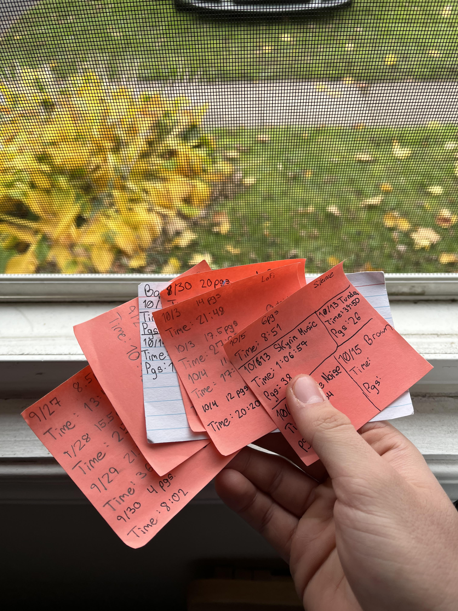
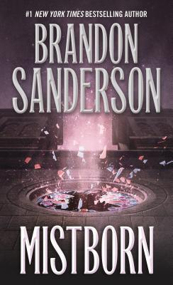

I know many people who struggle to read. Not in the sense of understanding the words on the page, but actually getting immersed into the plot, characters, and themes that the author has created. This can be for any number of reasons. Everyone struggles with getting distracted while reading. One second you're immersed, and the next you remember you're just looking at symbols on a page. Sometimes its hard to escape into a book when your thoughts are racing after a long day, or your mind is clouded with drowsiness. All of these things have occurred to me many a time, and I started to wonder why they happen.
I began thinking about different things that could be affecting my ability to stay immersed in a book, and it came to me - the sounds around me affect my reading comprehension, speed, and overall enjoyment of the book. This was just my hypothesis, so I came up with the idea to track my reading speed over the course of a book I was about to begin reading. I would log the date, the type of noise I would use while reading, the time I spent reading, and the number of pages I consumed.
The book I decided to go with is Mistborn by Brandon Sanderson. This is the first book of a trilogy and was early on in Sanderson's career, but it really shows how talented he is at world-building and at creating interesting characters. This isn't the first Sanderson book I have read, so being familiar with his writing style may have increased my reading speed. I don't think this had an effect on how any particular noise affected my reading speed. The book is about 600 pages long, but I only logged about 300 pages of it.
I wouldn't say the data I collected is enough to come to any scientific conclusions about sound and reading speed, but it is enough for me to consider how they affect me personally. It can also show you how to test your reading speed based on noise. Before I show the results I collected, I'll breifly explain each noise that I used and give a sound byte of each.
First is "Brown Noise" which is low frequency sound that is often described as "dark" and "warm." It sounds like a low and deep rumbling, and is similar to other sounds in nature like a waterfall or rain. Here is an example:
Next is "White Noise" which is similar to brown noise except its frequency is "random," which basically means that every frequency of the noise is equal in its intensity. White noise sounds just like TV static. Here is an example:
LoFi, or "low fidelity" music is simple electronic music that focuses on melody and mood. There are almost no lyrics, as its more of a repetition of sounds in a rhythm. Lo-Fi is great music for studying and/or reading. Here is an example:
For "Outdoors," this just means I read outside in a public environment without music. The sounds I heard while reading outside varied based on the location, but I heard birds, wind, and cars pretty much everywhere.
For "Silence," I tried to read with as little noise around me as possible. No fan, music, or surrounding sounds.
For the "Ambiance" sounds, I used music mainly created by Jeremy Soule, which consists of natural noise mixed with calm instrumentals. The instrumentals meld with the natural sounds to create a soothing environment. Here is an example of the ambiance I listen to a lot called "Tundra":
Last but not least, I listened to Jazz while I read a few chapters. Jazz is very improvised music, so its sounds aren't very consistent all the way through, but it acts as good background noise to relax or unwind. Here's an example of what I would listen to:
Graph created using matplotlib to visual the data and pandas to read in data from an excel document. The code for creating this graph is provided below.
Upon visualizing the results, I was actually quite surprised with the results. I collected the
most data in Brown Noise and Ambiance, so I thought that my speed would be higher with Brown Noise.
I'll go through each sound and explain how I thought it affected my reading speed.
LoFi - LoFi was one of my goto choices for reading during the experiment, but I actually preferred Brown Noise.
Sometimes the music got distracting while reading, but that had to do with the variability of the songs. Each
track varies in length, but if I'm reading for a longer period the music is changing a lot.
White - This was definetely my least favorite noise to listen to for reading. The noise is unpleasant at first,
but after a few minutes of reading I got used to it. I wouldn't choose White noise over Brown noise.
Outdoors - Reading outside is my preferred way to read, and the sounds are relaxing to me. I chose to read outside
every time the weather permitted, and I never used headphones. This is reflected in the results, since reading Outdoors
was my second fastest reading speed tied with LoFi.
Silence - Reading in silence is always viable to me, but I tend to get distracted by my thoughts easier without any noise.
You can see that Brown noise, while close to silence, helps keep me more focused on my book.
Brown - My personal favorite despite not being reflected in the data was Brown Noise. I had never listened to Brown Noise
while reading before this experiment, but I will definetely continue using it. I find Brown noise to be especially useful
for reading comprehension, despite the my speed not being quite as high as other noises. I'd highly reccomend listening to
Brown noise if you're reading something more challenging or acedemia related (I use Brown noise whenever I read a textbook
for school).
Ambiance - By far my most commonly used background reading sound, Ambiance greatly beat the other noises in terms of my
reading speed. I do think a few factors affected this skewed result, like me being most used to reading with this type of
noise, as well as Ambiance being the main noise I used towards the END of the book. If you have ever read a Brandon Sanderson
book you would know that the last 100-150 pages or so are always so exciting that it makes me read faster. I also read in
longer durations, allowing to me to focus for longer periods which could have increased my reading speed. Regardless of
these factors, Ambiance is my go to reading ambiance, as it helps me get immersed and focused on the book.
Jazz - I love jazz music don't get my wrong, but its not for me in terms of background reading noise. It's melodies and
variablility are distracting when reading, and my mind starts to focus more on the music than the words on the page.
Conclusion: Reading speed most certainly can affect a reader's reading speed, but it is up to the individual to determine what noises suit their reading experience the best. For me it is ambient music by Jeremy Soule or similar creators, but Jazz might be a better option for you. It is really up to your personal preference. Give this experiment a try with the next book you decide to pick up and see what suits you the best!
Data collection was done by hand then inserted into an excel document later. Pandas is a data analysis library in python. I used its functions to extract data from the excel document. To visualize the data, I used matplotlib which is a data visualization library for python.

# graphing library
import matplotlib.pyplot as plt
# reading in my data
import pandas as pd
# read in the document
df = pd.read_excel("Articles/readingData.xlsx")
#grab the headers
headers = df.columns
sounds = set()
for i in df['Sound Type']:
sounds.add(i)
# create a dictionary of avg reading speeds (pgs/min)
avg_speeds = {}
for sound in sounds:
timesForThisSound = df.loc[df["Sound Type"] == sound, 'Total time in minutes']
pgsForThisSound = df.loc[df["Sound Type"] == sound, 'Pages Read']
speedsForThisSound = [pgs / time for pgs, time in zip(pgsForThisSound,timesForThisSound)]
avg_speeds[sound] = round(sum(speedsForThisSound) / len(speedsForThisSound), 2)
# get the x axis labels and the heights for each one
x_labels = list(sounds)
heights = [avg_speeds.get(x,0) for x in x_labels]
# colors for the bars
colors = ['chocolate', 'mediumseagreen', 'mediumpurple',
'lightsteelblue', 'lightyellow', 'lightcyan'
, 'snow']
# background color
plt.figure(facecolor='black')
# plot the values
plt.bar(x_labels, heights, color=colors)
# background color
plt.gca().set_facecolor('black')
# Customize the color of the axes
ax = plt.gca()
ax.spines['bottom'].set_color('white') # X-axis
ax.spines['top'].set_color('white') # X-axis
ax.spines['left'].set_color('white') # Y-axis
ax.spines['right'].set_color('white') # Y-axis
ax.tick_params(colors="white")
# put the values of each bar on top
for x, y in zip(x_labels, heights):
plt.text(x, y, str(y), ha='center', va='bottom', color='white')
# label the axis's
plt.xlabel("Sounds", fontweight='bold', color='white')
plt.ylabel("Average Reading Speed (page/minute)", fontweight='bold', color='white')
plt.title("Sounds vs. Reading Speed", color='white')
plt.show()
On Mistborn: this was a fantastic read. Sanderson is an amazing story teller with master-level world-building. If you're a fantasy fan this is a must read.
